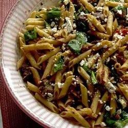

Greek Pasta with Steak
One quick, unique and healthy meal that will liven up your taste buds!

Ingredients
- 8 ounces whole wheat penne pasta
- 2 tablespoons extra virgin olive oil
- 1 tablespoon butte
- 1 (1 pound) beef rib eye steak
- 1 tablespoon butter
- 1 teaspoon minced garlic
- ¼ cup chopped shallots
- 1 tablespoon soy sauce
- ½ cup sun-dried tomato pesto
- ½ cup sliced black olives
Steps
- Bring a large pot of lightly salted water to a boil. Add pasta and cook for 8 to 10 minutes or until al dente. When cooked, drain, then toss with olive oil, and keep warm.
- Meanwhile, melt 1 tablespoon butter in a skillet over medium-high heat. Sear the rib-eye on both sides until rosy-pink in the center, 7 to 10 minutes depending on thickness. Remove steak from skillet and cut into bite-size pieces. Melt the remaining 1 tablespoon of butter in the skillet, and stir in the garlic and shallots. Cook 5 to 10 seconds until fragrant, then return the steak to the pan and cook for another 5 minutes or to desired doneness. Stir in the soy sauce, and cook a few seconds longer, allowing it to evaporate.
- Remove the skillet from the heat and stir in the sun-dried tomato pesto, olives, spinach, basil, parsley, feta cheese and sunflower kernels. Toss with the pasta in a large bowl and serve.
Go back